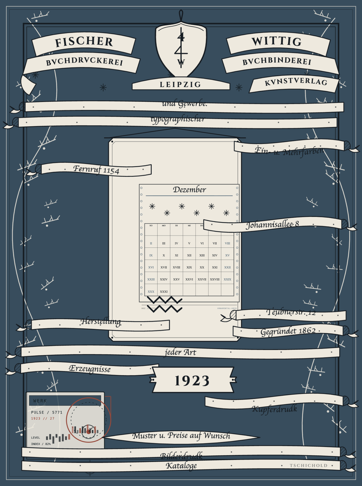
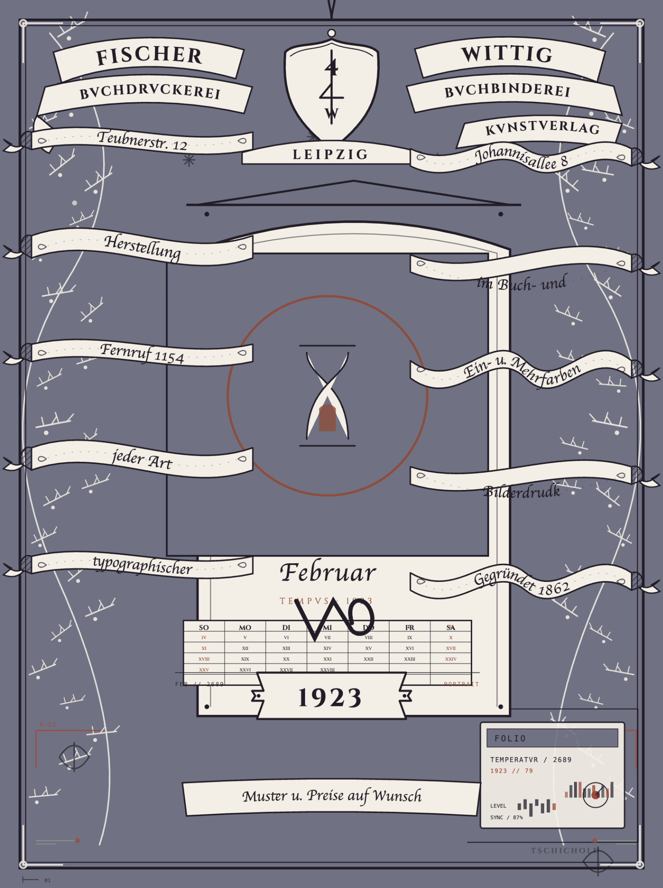
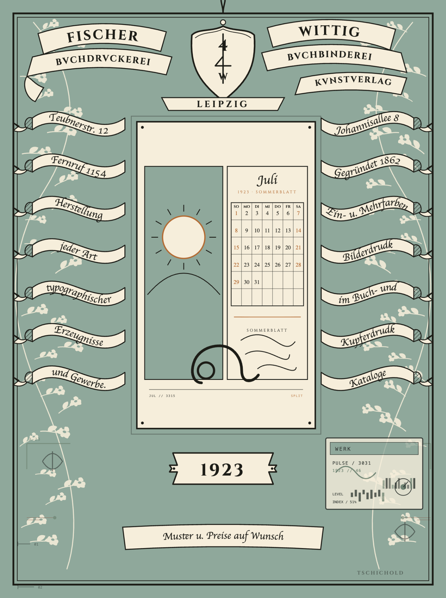
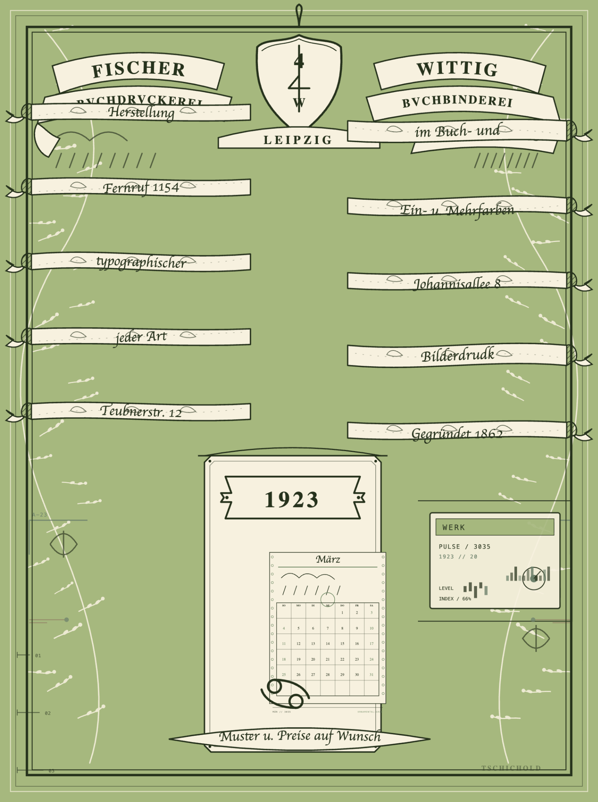
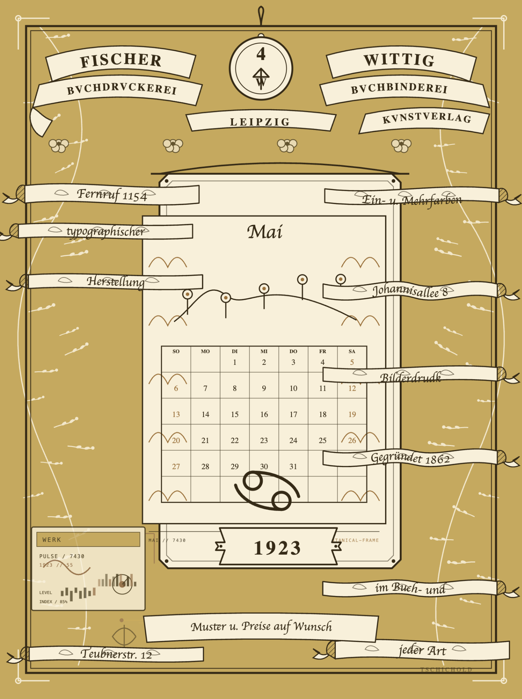
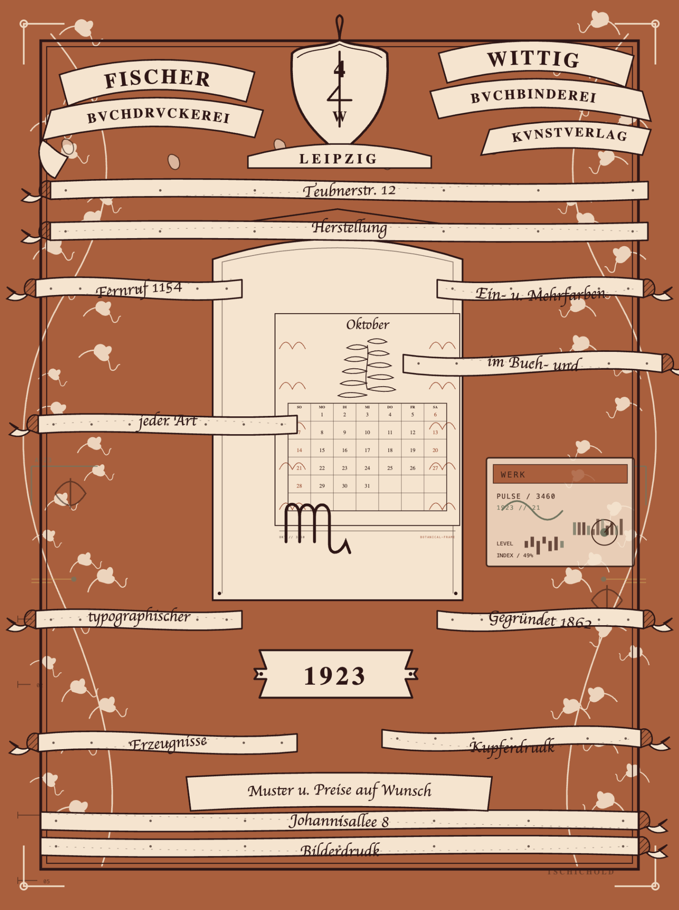

View full poster ↗SAMPLE 01
December — Winter folio
A restrained winter palette with snowflake motifs and a compact archival calendar.
Generative design · 1923 calendar study
Six outputs from a generative calendar poster system inspired by Jan Tschichold’s 1923 Leipzig specimen. Each variation explores a different month, palette, calendar structure, and seasonal visual language while keeping the original poster’s ribbon-and-architecture DNA.
01 / The gallery
Open any poster to inspect it at full size. The samples show seasonal color changes, alternate calendar layouts, botanical motifs, weather cues, and different levels of modern graphic detail.

View full poster ↗SAMPLE 01
A restrained winter palette with snowflake motifs and a compact archival calendar.

View full poster ↗SAMPLE 02
A dramatic violet-grey field, hourglass emblem, and a more experimental calendar composition.

View full poster ↗SAMPLE 03
A sage-green summer composition pairing a sun illustration with a split calendar panel.

View full poster ↗SAMPLE 04
A spring-green layout with rain marks, a delicate calendar grid, and broad negative space.

View full poster ↗SAMPLE 05
A warm ochre palette, botanical details, and a large central calendar as the main focal point.

View full poster ↗SAMPLE 06
Rust-colored ground, climbing botanical forms, and a compact illustrated calendar.
02 / Process documentation
The project notes document the design direction, historical reference, typography, color tokens, layout geometry, and constraints behind the poster generator. You can preview each file here or open/download the original Markdown.
PROJECT LOG
Project overview, current status, key design decisions, typeface choices, color system, and directory layout.
# handoff.md — 1923 Tschichold Calendar Generator ## 1. Project Overview & Current State * **Current Session:** Session 1 (Deconstruction, Typographic Hierarchy & AI Sourcing). * **Reference Artifact:** Jan Tschichold's 1923 promotional calendar poster for *Fischer & Wittig* (Leipzig). * **Status:** - Archival image analyzed and deconstructed. - Core design logic, math, and typographic hierarchy encoded into `skills.md`. - Typefaces sourced, tested, and downloaded. - Project directory structure established. --- ## 2. Key Decisions & Rationale * **Selected Specimen:** Jan Tschichold (1923). Chosen for its hybrid aesthetic: pre-modernist architectural symmetry paired with expressive German calligraphic ribbons and early inscriptional Roman lettering. * **Typographic DNA:** * **Header / Roman Caps:** *Cinzel* (Google Fonts) was chosen to match the inscriptional, chiselled epigraphic Roman capitals in the header banners, year cartouche, and city label. * **Ribbon / Fraktur:** *UnifrakturMaguntia* (Google Fonts) was chosen for the service ribbons and month header to faithfully reproduce the high-contrast German blackletter calligraphy. * **Color System:** Restricted 3-tone historical palette: * Aged Ivory / Cream (`#F6EEDB`) * Faded Sage / Mint Ground (`#A7C3B2`) * Carbon / Charcoal Black Ink (`#1B1E1C`) * **Layout Geometry:** Symmetrical 3-bay division (31% left ribbon bay, 38% central architectural calendar spine, 31% right ribbon bay) with an overall 1 : 1.35 aspect ratio. --- ## 3. Directory Layout ```text project-root/ ├── assets/ │ ├── fonts/ │ │ ├── Cinzel-Regular.ttf (or .woff2) │ │ └── UnifrakturMaguntia.ttf (or .woff2) │ └── images/ │ └── calendar.jpg (reference poster) ├── skills.md (master design rule engine) └── handoff.md (current project status & session log)
DESIGN RULE ENGINE
Reference analysis and the system’s visual rules: palette, typographic hierarchy, geometry, and generative constraints.
# skills.md — 1923 Tschichold Architectural Ribbon Calendar Engine
## 1. Primary Source Analysis & Critical Deconstruction
### 1.1 Original Visual & Formal Analysis (Student Observation)
> "This is a calendar from 1923 designed using medieval times typography with ink use. There is a dark-grey vertical rectangle center, framed like a doorway with lettering inside. In addition, there is a rope loop at the top edge tied with cord showing it can be hung on to something like a wall- it is a calendar.
>
> There are flowers and leaves on branches coming out of the border of the poster. I would say these are stylized leaf and flower vine motifs climbing through the green ground around the edges and within border panels of centered rectangle. The mint-green color and the leaf and flower motifs create a garden-like atmosphere. The background is pale mint-green colored.
>
> So, the color palette has three tones- mint green washed out color, ivory-cream paper and charcoal;-black used for ink, lines and the block in the middle and the typography is written in swirls around the rectangular block. The centered rectangle has flowers on each corner inside it. The rectangle is meant to display the month of July 1923 with its dates inside it. The green colored background is faded and there are ink marks from type. The grid is symmetrical and architectural but with floating type banners. In the bottom right corner in faint caps there is the signature of TSCHICHOLD."
### 1.2 Extended Typographic & Historical Deconstruction
* **Designer & Period:** Designed by Jan Tschichold in Leipzig for the printing firm *Fischer & Wittig* for July 1923. Produced prior to his modernist manifesto *Die neue Typographie* (1928), this work showcases Tschichold's formal grounding in historical calligraphy, medieval rubrication, Renaissance inscriptional epigraphy, and the Arts & Crafts movement.
* **Tectonic Doorway / Tabernacle Center:** The central rectangle acts as an architectural portal or tabernacle altar. It anchors the bilateral composition, framed by a single 1.5 pt rule and reinforced by four internal corner florets.
* **Banderole Scrolls:** Floating text scrolls feature dynamic isometric reverse folds, bifurcated fishtail ends, and directional $45^\circ$ black ink hatching on underfolds to create tactile volume without modern tonal gradients.
* **Dual Orthographic Systems:**
1. *Lapidary Roman Capitals* representing architectural permanence (publishers, city, year, day abbreviations).
2. *German Fraktur / Blackletter Calligraphy* representing vernacular craft and service offerings.
* **Colophon:** Inconspicuous imprint in faint small capitals (`TSCHICHOLD`) positioned in the lower-right margin, deliberately subordinated to avoid disrupting the bilateral balance.
---
## 2. Color Palette & Material Tokens
Three-tone relief print specification derived directly from ink-on-rag-paper artifacts:
| Token Key | CSS / Canvas Hex | Name | System Role & Behavior |
| :--- | :--- | :--- | :--- |
| `COLOR_PAPER` | `#F6EEDB` | Aged Ivory / Cream | Substrate ground, ribbon interiors, calendar placard fill, vine knockout silhouettes. |
| `COLOR_FIELD` | `#97B7A3` | Faded Sage / Mint | Garden ground wash applied exclusively behind banners and outer bays. |
| `COLOR_INK` | `#1A1C19` | Iron-Gall Charcoal Black | Letterforms, border hairlines, ribbon contours, cross-hatching, and numerals. |
---
## 3. Typographic Engine: Scale, Ratios & Hierarchy
### 3.1 Font Fidelity & Matching Analysis
* **Cinzel (Google Fonts) $\leftrightarrow$ Roman Inscriptional Headers:**
* *Poster Match:* Tschichold’s roman headers (`FISCHER`, `WITTIG`, `BVCHBINDEREI`) feature chisel-cut serifs, open geometric bowls, and classical Trajan proportions.
* *Fidelity Verification:* `Cinzel` matches these epigraphic strokes, flared terminals, and wide apexes accurately.
* **UnifrakturMaguntia (Google Fonts) $\leftrightarrow$ Fraktur & Blackletter Banderoles:**
* *Poster Match:* The month header (`Juli`) and service ribbons (`Herstellung`, `Kataloge`, `Kupferdruck`) display traditional 16th-century German Fraktur ductus, prominent bifurcated ascenders, broken angular curves (*gebrochene Schrift*), and characteristic majuscule loops.
* *Fidelity Verification:* `UnifrakturMaguntia` reproduces these ligature structures, broken stroke rhythms, and calligraphic textures with high historical fidelity.
---
### 3.2 Programmatic Scale System (Modular Ratio: Major Third $\approx 1.250$)
The layout engine defines all typography relative to a dynamic canvas height base unit ($U = \text{canvasHeight} / 1000$):
$$\text{Base Unit: } U = 1.0 \text{ px (at standard 1000px height)}$$
| Hierarchy Level | Functional Role | Font Family | Size Formula | Computed (1000h) | Tracking / Letter-Spacing | Line Height | Case & Transform |
| :--- | :--- | :--- | :--- | :--- | :--- | :--- | :--- |
| **Tier 1 (H1)** | Month Heading (`Juli`) | `UnifrakturMaguntia` | $42 \times U$ | $42\text{ px}$ | $+0.04\text{ em}$ | $1.05$ | Title Case (flanked by decorative `*`) |
| **Tier 2 (H2)** | Primary Banners (`FISCHER`, `WITTIG`) | `Cinzel` | $30 \times U$ | $30\text{ px}$ | $+0.18\text{ em}$ | $1.00$ | ALL CAPS, Latin Archaic (`U` $\rightarrow$ `V`) |
| **Tier 3 (H3)** | Sub-Banners (`BVCHBINDEREI`, `LEIPZIG`) | `Cinzel` | $22 \times U$ | $22\text{ px}$ | $+0.14\text{ em}$ | $1.05$ | ALL CAPS, Latin Archaic (`U` $\rightarrow$ `V`) |
| **Tier 4 (H4)** | Year Anchor (`1923`) | `Cinzel` / Serif | $28 \times U$ | $28\text{ px}$ | $+0.12\text{ em}$ | $1.00$ | Centered tabular numerals |
| **Tier 5 (Body)** | Flanking Banderoles (Services) | `UnifrakturMaguntia` | $19 \times U$ | $19\text{ px}$ | $+0.02\text{ em}$ | $1.15$ | Title / Sentence Case (SVG `<textPath>`) |
| **Tier 6 (Grid Head)**| Day Names (`SO`, `MO`, `DI`...) | `Cinzel` | $13 \times U$ | $13\text{ px}$ | $+0.08\text{ em}$ | $1.00$ | Small Caps / Monospaced cell width |
| **Tier 7 (Grid Data)**| Calendar Numerals (`1`–`31`) | `Cinzel` / Serif | $17 \times U$ | $17\text{ px}$ | $0.00\text{ em}$ | $1.00$ | Tabular lining, centered in cells |
| **Tier 8 (Caption)**| Colophon (`TSCHICHOLD`) | `Cinzel` | $9 \times U$ | $9\text{ px}$ | $+0.22\text{ em}$ | $1.00$ | ALL CAPS, Opacity: $0.45$ |
---
## 4. Layout Geometry & Coordinate Map
* **Canvas Aspect Ratio:** Standard 1 : 1.34 vertical broadsheet ($800\text{ px} \times 1072\text{ px}$ reference baseline).
* **Outer Margins:** Symmetrical $4.5\%$ inset enclosing a 2-line composite border frame ($1.5\text{ pt}$ outer rule, $3\text{ pt}$ whitespace gap, $0.75\text{ pt}$ inner hairline).
* **Column Divisions:**
* **Left Bay ($X = 4.5\% \rightarrow 35\%$):** 7 stacked angled ribbon nodes with alternating inclinations ($-14^\circ$, $+11^\circ$, $-12^\circ$).
* **Central Spine ($X = 35\% \rightarrow 65\%$):**
* *Top Shield & Monogram:* $Y = 6.5\% \rightarrow 17.5\%$
* *City Placard (`LEIPZIG`):* $Y = 18\% \rightarrow 22\%$
* *Calendar Tabernacle Box:* $Y = 24.5\% \rightarrow 76.5\%$
* *Year Placard (`1923`):* $Y = 78\% \rightarrow 85\%$
* **Right Bay ($X = 65\% \rightarrow 95.5\%$):** 7 stacked ribbon nodes mirroring the left bay's vertical rhythm.
* **Bottom Footer Cartouche ($X = 28\% \rightarrow 72\%$):** $Y = 88\% \rightarrow 93\%$ holding address / price text.
---
## 5. Algorithmic Constraints for the Poster Generator Tool
1. **Path-Curvature Conformance:** Text assigned to ribbons must bind directly to cubic Bezier text paths (`d="M x0 y0 C x1 y1, x2 y2, x3 y3"`). Text cannot render as un-warped flat blocks.
2. **Dynamic Archaic Filter (Rule engine):** Any text input mapped to Roman Display tiers (`H2`, `H3`) must automatically run an orthographic transform function:
$$\text{Transform: } \text{inputString}.\text{toUpperCase}().\text{replace}(/U/g, 'V')$$
3. **Bilateral Counterweight Rule:** If a user inputs text into slot $L_n$ in the left bay, slot $R_n$ in the right bay must dynamically adjust its ribbon height and rotation to retain horizontal balance across the central tabernacle axis.
4. **Binary Hatch Shading:** Scroll turnarounds and reverse folds must render programmatic parallel lines ($45^\circ$, $1.2\text{ px}$ stroke, $3\text{ px}$ pitch) to preserve the woodblock relief character without soft drop shadows or gradients.